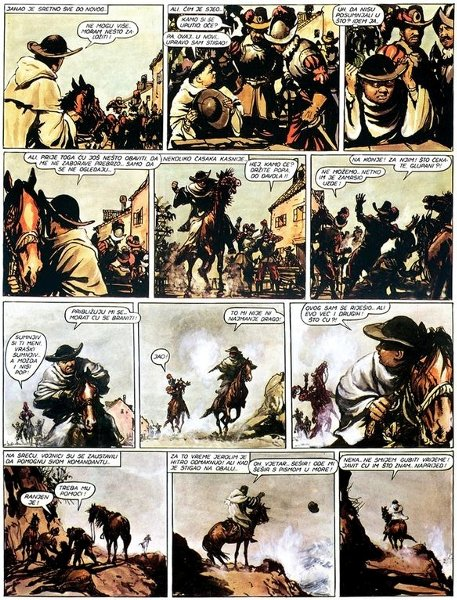

Hrvatska enciklopedija redovito se ažurira i dopunjuje novim i zanimljivim člancima iz područja znanosti, umjetnosti, književnosti, geografije, povijesti i tehnike. Predstavljamo vam dva nova članka o stripu koji pripada području umjetnosti, o dvojici junaka komičnoga stripa koji su desetljećima svojim dogodovštinama zabavljali čitatelje. Tintin je mladi reporter, Spirou novinar, a obojica upadaju u razne kriminalističke, znanstvenofantastične i pustolovne zaplete smještene u egzotične krajeve.
Tintin je junak belgijskoga komičnog stripa Tintinove pustolovine (Les Aventures de Tintin) kojega u njegovim pustolovinama prati pas Čupko (franc. Milou). Prvi nastavak Pustolovine Tintina, reportera »Mladog stoljeća« u zemlji Sovjeta počeo je izlaziti početkom 1929., a posljednja, 24. epizoda ostala je nedovršena i tiskana je 1986. Autor crtanih priča i pustolovnih zapleta je belgijski crtač i scenarist Hergé (pravim imenom Georges Remi). Belgijsku školu stripa odlikuje čist i moderan grafički stil bez sjenčanja te ravnomjerne, nepromjenjive linije kojima se naglašavaju obrisi.
Spirou je junak stripa Spirou i Fantasio u kojem se prikazuju doživljaji istoimenih likova i koji spaja pustolovno-špijunske zaplete, ironijski humor i blago karikaturalan realistički crtež. Spirou i Fantasio su prijatelji i novinari, Spirouov je kućni ljubimac vjeverica Spip, a u stripu se pojavljuje i velik broj stalnih likova: ekscentrični izumitelj grof Champignac, egzotična životinja Marsupilami, zli izumitelj Zorglub i mnogi drugi. Stvorio ga je crtač Rob-Vel (pravim imenom Robert Velter). Strip je počeo izlaziti 1938., no njegovo klasično razdoblje, u kojem je postigao svjetski uspjeh, počelo je 1946. kada ga preuzima crtač i scenarist André Franquin. Ukupno je do 2019. izišlo 55 albuma u glavnome nizu.
Tintin i Spirou najpoznatija su djela belgijsko-francuske tradicije stripa koja su prevedena na više desetaka jezika i adaptirana u radiodramske i animirane serije, igrane i crtane filmove te videoigre. No ako želite saznati nešto više o hrvatskome stripu, u Hrvatskoj enciklopediji možete pročitati kako se strip u Hrvatskoj razvijao, kako se zvao prvi hrvatski strip, tko su Andrija Maurović, braća Neugebauer i Julio Radilović Jules, što je Novi kvadrat te koji su hrvatski crtači postigli zapaženu međunarodnu karijeru.

Andrija Maurović, kadrovi iz stripa Čuvaj se senjske ruke